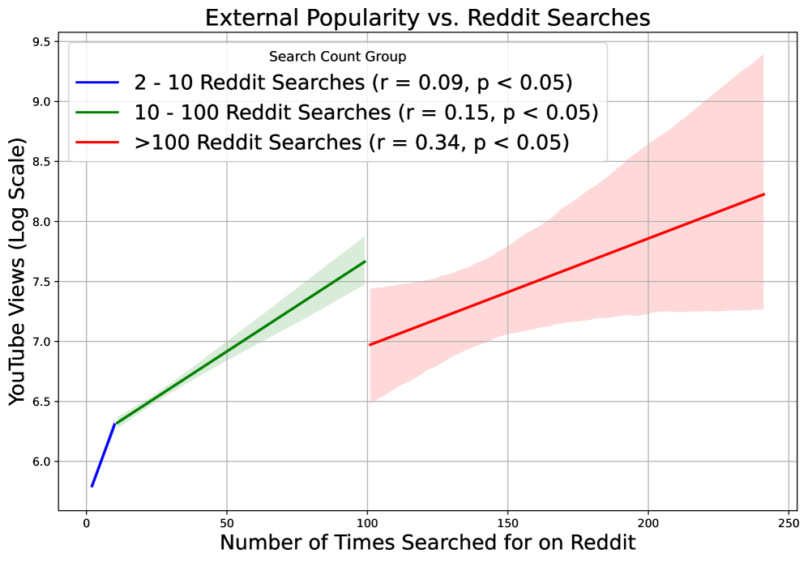
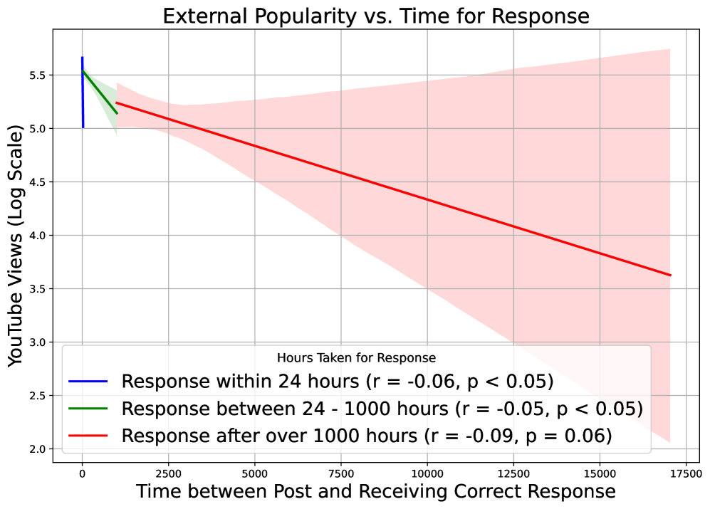
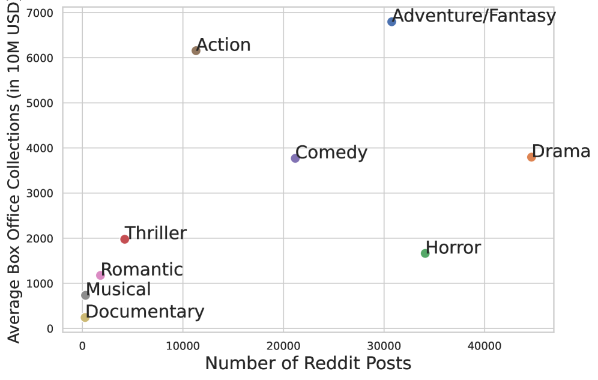
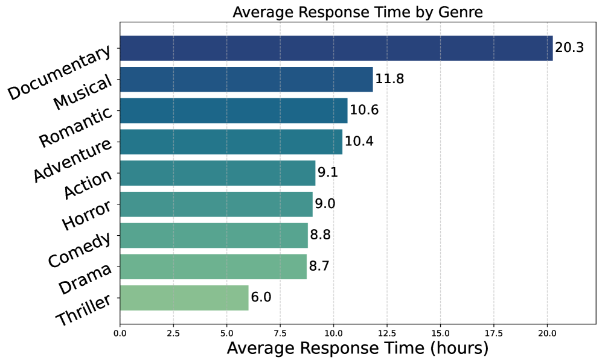
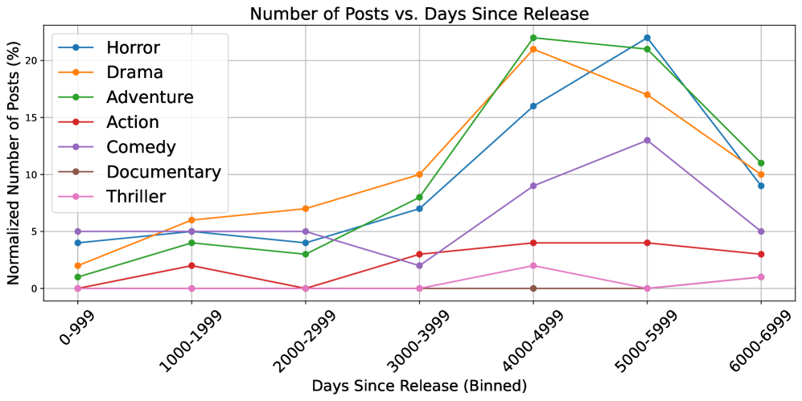

If you are new to memorability research, think of these plots as a map of what people struggle to remember and how communities help recover those memories. Instead of asking people in a lab to memorize clips, this dataset observes real recall attempts from tip-of-the-tongue posts in the wild.
The two groups below answer beginner-friendly questions: Which kinds of content trigger more memory-search requests? Which kinds are solved quickly or slowly? And how does this behavior change with genre and time since release?
This first set compares three signals: how popular content is outside Reddit, how often it is searched in ToT forums, and how long it takes before someone posts the right answer. A simple way to read these plots is to treat each point as one content item and look for broad trends instead of perfect lines.



In short, popularity helps people remember enough details to search, but not always enough details to recover the exact title without help.
The second set focuses on time. One plot compares average solve time across genres. The other shows when people search relative to the original release date, which is useful for understanding long-term memory rather than short-term recognition.


For beginners: these patterns show why ToT2MeM is more than a large dataset. It captures realistic memory behavior over long time spans, which is exactly what recall generation and ToT retrieval models need.
Visual content memorability has intrigued the scientific community for decades, with applications ranging widely, from understanding nuanced aspects of human memory to enhancing content design. A significant challenge in progressing the field lies in the expensive process of collecting memorability annotations from humans. This limits the diversity and scalability of datasets for modeling visual content memorability. Most existing datasets are limited to collecting aggregate memorability scores for visual content, not capturing the nuanced memorability signals present in natural, open-ended recall descriptions. In this work, we introduce the first large-scale unsupervised dataset designed explicitly for modeling visual memorability signals, containing over 82,000 videos, accompanied by descriptive recall data. We leverage tip-of-the-tongue (ToT) retrieval queries from online platforms such as Reddit. We demonstrate that our unsupervised dataset provides rich signals for two memorability-related tasks: recall generation and ToT retrieval. Large vision-language models fine-tuned on our dataset outperform state-of-the-art models such as GPT-4o in generating open-ended memorability descriptions for visual content. We also employ a contrastive training strategy to create the first model capable of performing multimodal ToT retrieval. Our dataset and models present a novel direction, facilitating progress in visual content memorability research.
| Subset | What it contains | Scale |
|---|---|---|
| ToT2MeM | 470K solved Reddit posts linking vivid recall descriptions to the ground-truth media they were searching for. | 470,000 content-recall pairs |
| ToT2MeM-Video | Video subset with scene crops, audio transcripts, OCR, and metadata, filtered to clips shorter than 10 minutes. | 82,000 videos (with ~3.1M scene snippets) |
| External Factors | Emotion, genre, pacing, and popularity indicators derived from open data sources to study cross-factor memorability correlates. | 20+ high-level descriptors per content item |
Train ToT2MeM-Recall to produce rich, human-like descriptions that capture what makes an item memorable. The model leverages vision-language cues, scene context, and ToT-style prompts to outperform GPT-4o in open-ended memorability narration.
Use contrastive training over recall descriptions and content embeddings to solve ToT-style search queries end-to-end. ToT2MeM-Retrieval is the first model to align descriptive cues with the exact video, audio, and textual evidence users recall.
The paper is available on arXiv. The ToT2MeM dataset (web-scale memorability) can be accessed on Hugging Face: behavior-in-the-wild/web_scale_memorability_all. Code, data loaders, and training utilities are maintained in the GitHub repository: behavior-in-the-wild/unsupervised-memorability. Reach out via behavior-in-the-wild@googlegroups.com for collaboration discussions.
@article{bhattacharyya2025unsupervised,
title={Unsupervised Memorability Modeling from Tip-of-the-Tongue Retrieval Queries},
author={Bhattacharyya, Sree and Singla, Yaman Kumar and Yarram, Sudhir and Singh, Somesh Kumar and Harini, S I and Wang, James Z},
journal={arXiv preprint arXiv:2511.20854},
year={2025}
}ToT2MeM data is collected from public Reddit communities and publicly available video links. We remove private or deleted media, NSFW tags, and bot-generated threads. The dataset does not expose usernames or personal identifiers. Please ensure your usage complies with the Reddit API terms and the licenses of the linked media. Access requires agreeing to our acceptable use policy that prohibits abusive, offensive, or discriminatory deployments.
We thank Adobe for sponsoring this research and the Reddit community for making the discussions publicly available. We also acknowledge the LLaMA and VLM ecosystems for releasing high-quality open models that accelerated our experimentation.